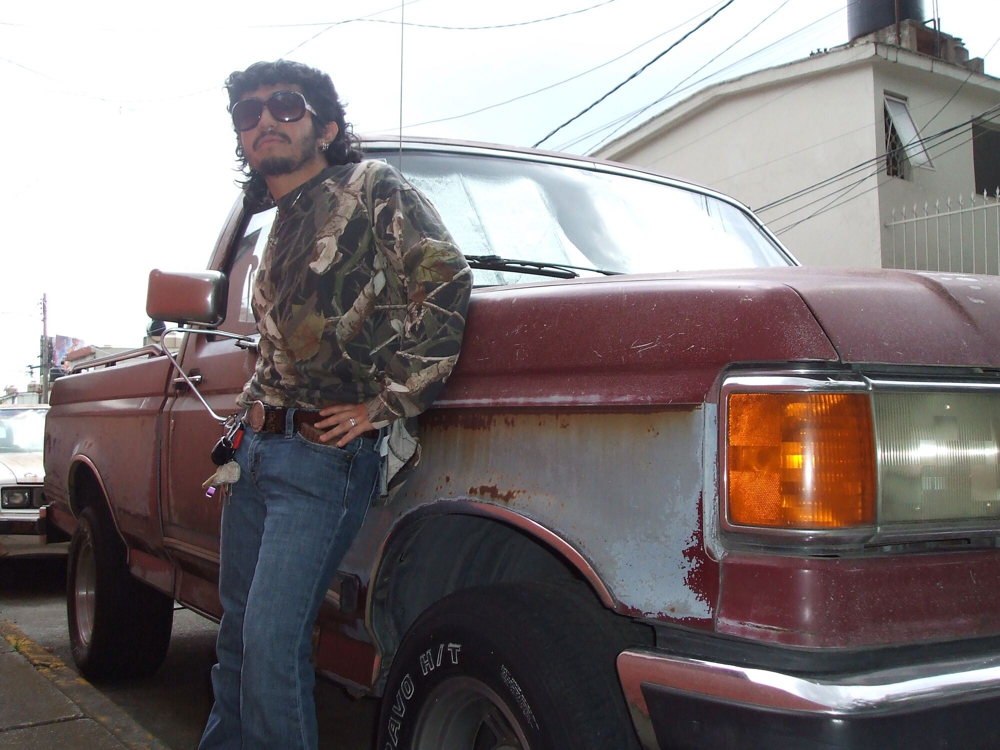

Bio
Saudaji es el proyecto solista de Santiago Tejeda — productor, compositor, ingeniero de audio y diseñador con base en Ciudad de México. Hace música desde los 18 años y se mueve entre el neofolk, el pop alternativo y las texturas orgánicas, buscando siempre otras formas de producir y componer: canciones que suenan a cuarto, a campo y a máquina al mismo tiempo.
Como solista ha publicado los EPs «tormenta, Callada» (2024) y «☼ ☞ ☺» (2025), además del sencillo «RUIDO» (2025), todos producidos, grabados y mezclados por él mismo bajo una ética DIY. En 2026 lanzó los sencillos «mucho +» y «(no) me quiero ir». Su música retrata la ansiedad y la belleza de lo cotidiano con un enfoque honesto y artesanal.
Ha tocado en más de la mitad del país y en Los Ángeles, consolidándose como parte de la nueva ola del pop independiente mexicano.
Highlights
- Shows con Los Milagro, ALONG, Wet Baes y Daniel Quién, entre otros.
- Presencia en Ibero 90.9 · presentaciones en México y Los Ángeles.
Escucha
Spotify: open.spotify.com/artist/1Y9oaq7o6sWlP4YKM9ohu9
Abrir en SpotifyEn vivo
Banda de 4: Santiago Tejeda (guitarra y voz), Misael Pérez (bajo, saxofón y voz), Alonso Villalpando (SP-404 SX y voz) y Andrés Jaime (batería).
Rider técnico: saudaji.com/rider.html
Producciones
Fuera de su proyecto es productor e ingeniero de audio, y socio y dueño de Sagredo Estudio. Algunos de sus trabajos para otros artistas:
 BAM BAM ATOM.
BAM BAM ATOM.
BAM BAM ATOM.
BAM BAM ATOM.Producción · Composición · 2023
 FEEL the GROOVE.
BAM BAM ATOM.
FEEL the GROOVE.
BAM BAM ATOM.Producción · Mezcla · Composición · 2024
 Eternidad
Fer Altuzar
Eternidad
Fer AltuzarProducción · Composición · 2025
 Por Las Buenas — EP
Doris Anahí
Por Las Buenas — EP
Doris AnahíCo-producción con Wet Baes (Por Las Buenas, Let It Die) · Producción (Before I Go) · Composición en los tres temas · 2023
 MAGAMUNDI
ALONG
MAGAMUNDI
ALONGProducción · Mezcla · Composición · 2026
 Corto Plazo
FAVZTO
Corto Plazo
FAVZTOProducción · Mezcla · Masterización · 2026
 Qué costumbre tan salvaje / DOOMINACIÓN
PERSONA
Qué costumbre tan salvaje / DOOMINACIÓN
PERSONAProducción · Mezcla · Masterización · Composición · 2026
 La flor
Tuzeint & Saudaji
La flor
Tuzeint & SaudajiProducción · Composición · 2026
Foto de prensa
